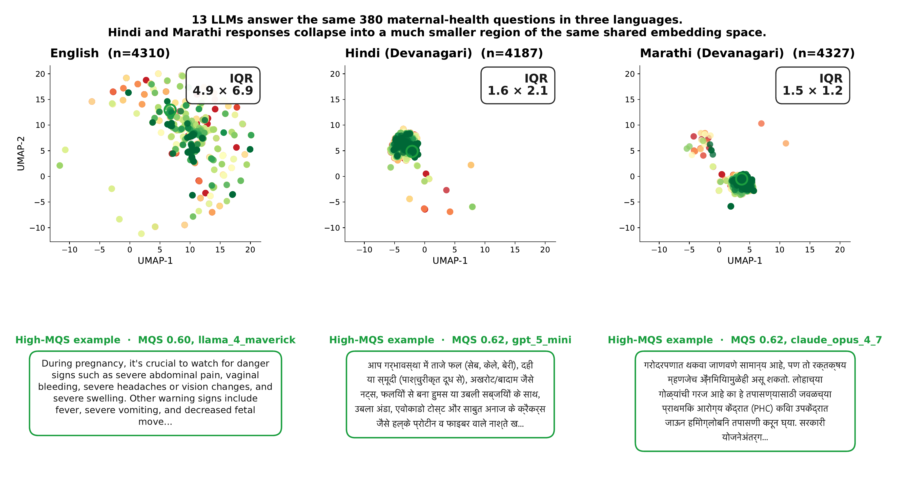
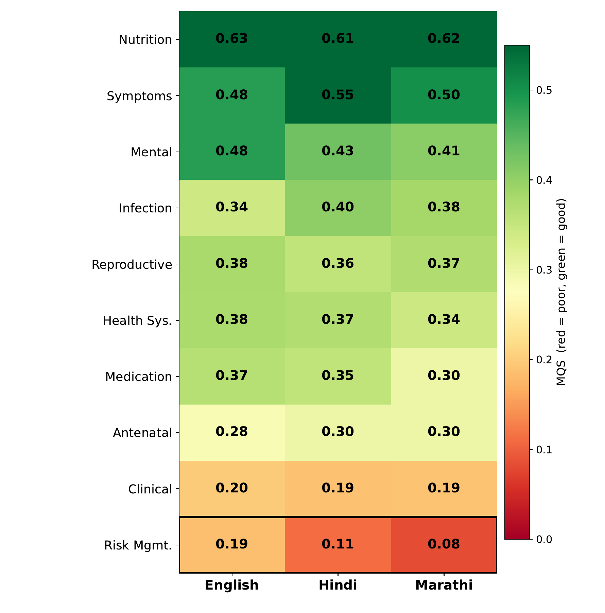
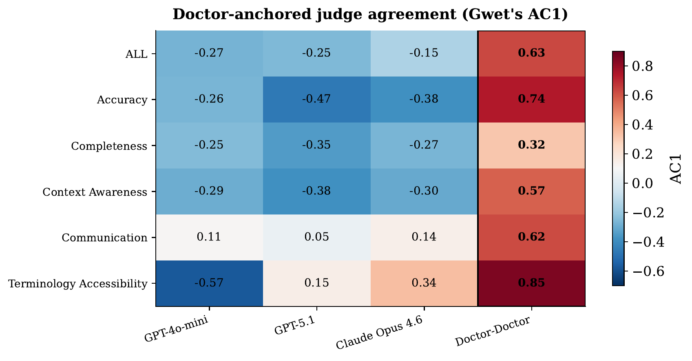
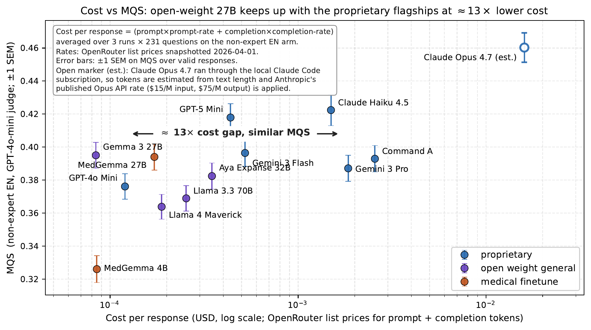

Large language models still fail maternal-health questions in non-English languages
Sakhi: a community-validated benchmark for rural India, in English, Hindi, and Marathi
Swapneel Mehta · SimPPL
In rural India, a chatbot often gives the first medical answer
- India has 609 million Hindi and 99 million Marathi speakers
- Many of them ask pregnancy questions to chatbots on WhatsApp
- Their nearest health worker is an ASHA worker, and a doctor can be hours away
- If the answer is wrong in Marathi, the mother has little way to check it
"I am pregnant and live far from hospitals. How can I have a safe delivery?"
"What warning signs during pregnancy should I watch for?"
"I just had a baby at home with a dai. How do I get a birth certificate?"
"I'm breastfeeding. Is it safe to take medicine for my health issues?"
Existing benchmarks test these models almost entirely in English
The women who depend on them are the ones those benchmarks leave out.
Almost every medical benchmark uses English questions and English graders
Translated benchmarks keep the English questions and Western graders
To our knowledge, no open clinical checklist existed in Hindi or Marathi that the community had vetted
A model can give a medication warning in English and leave it out of the Marathi answer.
Ask in Hindi or Marathi, and the models give a narrower set of answers
- We asked the same 380 questions in English, Hindi, and Marathi
- In English the answers vary widely; in Hindi and Marathi they repeat
- The rarer the language, the tighter the answers cluster
Most women our bot serves ask in Hindi or Marathi, and their answers vary the least.

Each dot is one answer. The spread shrinks from English (box 4.9 by 6.9) to Hindi (1.6 by 2.1) to Marathi (1.5 by 1.2).
We built Sakhi with the community it serves
Three groups shaped every question and answer:
Expectant mothers asked the real questions, through the WhatsApp bot
ASHA workers fixed the local wording and the services a village actually has
Doctors and nonprofit staff corrected the medicine and the cultural fit
380 question-answer pairs passed every review, in all three languages
One question, curated in all three languages
- Every question is parallel in English, Hindi, and Marathi
- A model drafts a first answer, in the middle row
- A doctor rewrites it into the reference answer, in the bottom row
- The doctor changed the answer for 97 of the 149 expert questions
We score each answer on five things a good reply needs
A panel of doctors chose the five measures and how much each one counts.
AccuracyIs the medical content correct?0.30
CompletenessDoes it cover what the question needs?0.25
ContextDoes it fit the woman's village and resources?0.20
CommunicationDoes it read warmly and clearly?0.15
TerminologyCan a village reader understand the words?0.10
We ran 13 models three times each, about 44,460 answers. An AI grader scored every answer against the checklist, and we checked its grades against 11 doctors.
Every model we tested struggles with the basics
On this scale, 1.0 means an answer passes all 15 clinical checks.
- The best model, Claude Opus 4.7, reaches only 0.33
- Every other model passes under a third of the checks
- The answers are medically correct and kindly written
- They still use clinic jargon and assume a Western clinic the woman cannot reach
Models score lowest on Context and Terminology, the two things that decide whether a woman can act on the answer.
Communication passes about 0.59; Terminology about 0.15 in English.
Here is a sample question, answered well and answered poorly
"How can I get proper breastfeeding guidance in my village?"
Claude Opus 4.7scored 0.90 · 13 of 15
"Ask your ASHA worker for home visits; she is trained in latching. Anganwadi workers also help with feeding, and Helpline 104 gives free phone advice."
MedGemma 4Bscored 0.25 · 3 of 15
"I am sorry, I am unable to provide specific guidance in your village. You can contact a lactation consultant for expert advice."
We graded both English answers the same way. The ASHA worker and Helpline 104 exist in the village; a lactation consultant does not.
Models do worst on the most dangerous topics, and worse again in Marathi

Green is a higher score, red is lower.
- Across the three languages the average scores stay close
- The clear drop is on one topic: managing pregnancy risks and complications
- On that topic the score falls from 0.19 in English to 0.08 in Marathi
- In Hindi and Marathi the same answer often becomes shorter and more generic
Our AI grader and real doctors often disagree
- Doctors and the AI grader agree on which parts of an answer are hardest
- They disagree on whether any single answer passes
- Doctors pass 75 to 88% of the checks; the AI grader passes far fewer
- The score changes more when we switch AI graders than when we switch the model being tested
So the grader we choose, and the language it reads, shapes the result as much as the model does.

Agreement runs from 1 (perfect) to 0 (chance). The AI graders sit near zero against doctors; doctors agree far more with each other.
A small open model scores about the same for far less money

Cost per answer, left is cheaper. Quality score, higher is better.
- MedGemma 27B, an open model, scores about the same as the paid ones
- It costs roughly 13 times less per answer
- The groups deploying to rural mothers are nonprofits and ASHA networks
- For them, cost often decides which model they can run at all
What to take away
- Even the best model passes under a third of basic maternal-health checks
- In Hindi and Marathi the answers get narrower and more templated, and quality drops on pregnancy-risk questions
- The AI grader disagrees with doctors, so who evaluates, and in which language, is an alignment choice
- A small open medical model nearly matches the paid frontier, which puts good tools within reach of nonprofits
Build the evaluation in the users' languages, with the people who serve them.
Everything is public for you to use and build on
380
questions, in English, Hindi, and Marathi
11
Indian doctors, 169 clinical ratings
5
measures, weighted by doctors
Rubric, grader logs, and doctor ratings released under CC BY 4.0. swapneel@simppl.org
Appendix
Backup detail on the grader, the language gap, and the limits of the benchmark.
The narrower spread survives every robustness check
- The narrower spread in Hindi and Marathi survives dropping UMAP, swapping the embedder, and controlling for length
- Lower spread does not track lower quality; across answers the two are uncorrelated
- Average scores stay close across languages, though that closeness depends on which grader we use
- The one clear quality drop is on managing pregnancy risks, and it is worse in Marathi
What we control for in the AI grader
- The score is grader-relative, so we report which grader produced each number
- Switching graders shifts every score by about 0.17 on our scale
- One grader is much stricter than the rest
- We trust a gap between two models only when a different grader shows it too
The limits of what Sakhi shows
- Translators produced the Hindi and Marathi from the English, so they miss how women phrase things there
- The checklist is one turn and pass-or-fail; real conversations go back and forth
- A benchmark is a starting point for safe deployment, but far from enough on its own
A small open medical model nearly matches much larger paid ones
MedGemma 27B, a 27B open model fine-tuned for medicine, against the average paid model.
Teal is MedGemma 27B, grey is the paid-model average. It comes within 0.01 to 0.04 on every measure, closest on Communication. A 27B open model tuned for the task keeps pace with models many times its size, at a fraction of the cost.